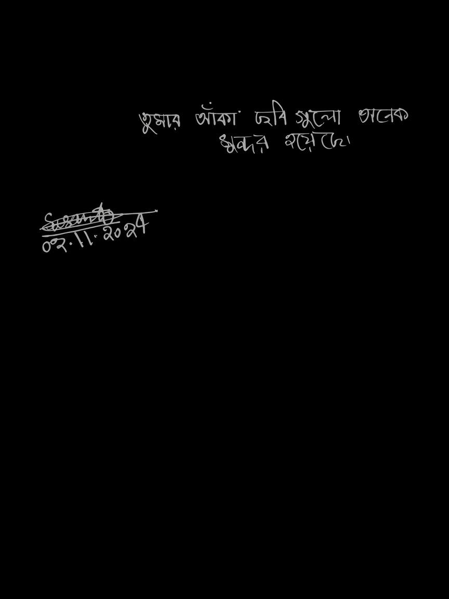

A handmade portfolio translated into a digital spatial archive
SHADIDAHAMED
Architecture student. Creative developer. Artist. Maker. First-semester portfolio built from hand, geometry, material, drawing, and code.
01 — Profile
A mind shaped by space,
learning to shape systems.
I am Shadid Ahamed, an architecture student at BRAC University (Roll 1000061008, ARC-101, Summer 2026). I live in Paltan, Dhaka.
Architecture taught me to see structure, light, proportion, and the quiet dignity of materials. Every drawing is a decision; every model a hypothesis about how people inhabit a place.
Now I am also learning how information moves, how interfaces breathe, and how code can hold intention as carefully as concrete holds a floor. The transition is not a departure — it is a continuation of the same craft in a new medium.
02 — The Book
Handmade first-semester portfolio.
Black mount / Swiss board, pen hatching, geometric lettering, checkerboard binding, burgundy accents. Hand-lettered name, roll number, and ARC-101.

03 — Process / Persistence
If I had to tell someone who Shadid was…
I would not start with results. I would start with effort. Closed doors, pressure, disappointment, and the quiet decision to keep drawing, keep making, keep showing up.
He kept fighting and creating even when the path was unclear. The real achievement is not a single grade or a single project — it is what he overcame while still trying to build something beautiful.
Remember the fighter who still tried.
Family
Father: Tofail Ahmed, Police Inspector. Mother: homemaker. Wife. Younger sister.
Complex real relationships — love, pressure, misunderstanding, and support existing side by side. The quiet desire that one day they will say: “He struggled a lot, but he never gave up.”
Lage Raho.
Keep going. Rise high enough that the noise cannot reach.
04 — Education
Trajectory of attention.
Architecture → Visual thinking → Digital systems → Exploring CSE
Motijheel Ideal School and College
SSC GPA 5.00 Golden A+


Notre Dame College
HSC GPA 5.00 Golden A+


BRAC University — Architecture
First semester. Foundations of architectural thinking, drawing, and making.


05 — Skills
A hierarchy of craft.
Art & Drawing
Sketching, colour studies, iPad work, hatching, and the discipline of the line.
Open gallery →Architectural Design
Spatial thinking, models, geometric studies, Lory Lift, grids, interlock, pavilion concepts.
Core craftWeb Development
HTML, CSS, JavaScript. Live projects: TrendCart & Shadid’s Game.
View projects →Video
Process documentation, visual storytelling, and the craft of sharing work with clarity.
Content06 — Previous Work
Evolution of digital craft.
Screens and studies that mark the shift from analog precision toward interactive systems.
Live Projects
07 — Achievements
Quiet milestones.

Consistency over spectacle
Recognition earned through sustained attention and care. A reminder that precision compounds.
SSC GPA 5.00 Golden A+ · HSC GPA 5.00 Golden A+
08 — Contact
Ready for the next space.
Whether it is made of concrete, paper, pixels, or code.
09 — Documents
Curriculum Vitae & Records
Academic Records
SSC & HSC transcripts available for download. Full CV can be requested or added here.